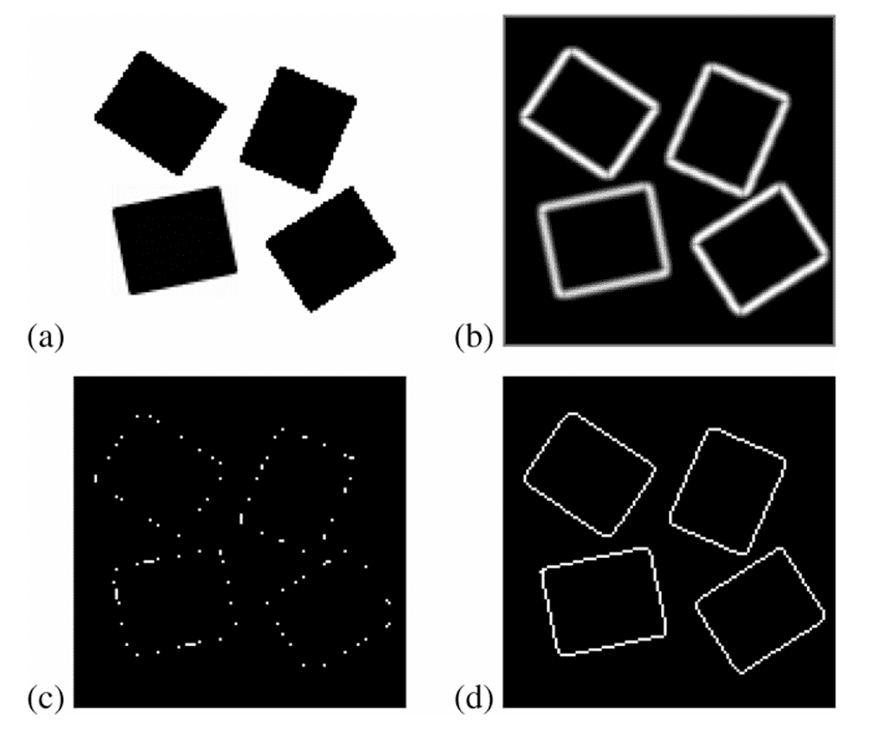
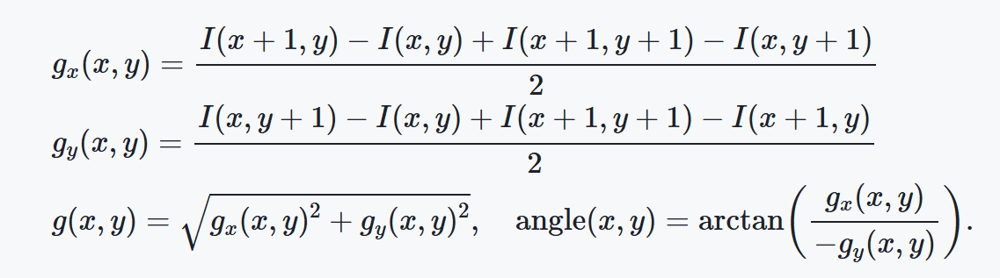

边缘检测方法：EDLines
介绍一种边缘检测方法：EDLines，来自以下文章，它可以在 OpenCV 中使用，具体用法在另一篇笔记中。
- Edge drawing: a combined real-time edge and segment detector
- EDLines: A real-time line segment detector with a false detection control
之所以有两篇，是 EDLines 前面用的就是 Edge drawing，其实都是一个作者写的。 Edge drawing 的详细记录在 另一篇笔记 中。
总体流程
流程一：先用 Edge Drawing 得到了一些连接的像素链； 流程二：对每个像素链进行分解，得到各个线段； 流程三：对线段进行验证，不符要求就丢弃。
流程一：使用 Edge Drawing 初步检测
Edge Drawing 的详细介绍在 另一篇笔记 中。下图是 Edge Drawing 各个步骤的临时结果，Edge Drawging 更侧重于边缘检测，他不会考虑直线的问题，以这张图为例，最后 Edge Drawing 会得到四条连接的像素链，即每个矩形对应一个。

参数说明
这里和 Edge Drawing 计算方式或默认值有轻微不同。首先梯度的大小计算方式不同，方向计算也不同，ED 用的 Sobel，EDLines 这里简化一些：

ED 有一个梯度阈值 gradient_thresh，小于该阈值的点不考虑：ED 使用 36，EDLines 使用 \(2/\sin(22.5) = 5.22\)，这里差这么多也是因为梯度计算方式有点不同。
ED 求解锚点（具体看 ED 方法），有一个 anchor_thresh 参数，表示某个点梯度值比周围点的梯度大多少才可以。这是一个经验参数，ED 用的 4，EDLines 论文中说实验结果显示 3 最好。
ED 求解锚点（具体看 ED 方法），还有一个 anchor_interval 参数，表示找锚点时遍历行列的步长，即决定了找锚点的扫描细节程度。ED 用的 4，EDLines 用的 1，即遍历所有的点。
流程二：对像素链进行拆解
下面就要开始对像素链拆分了，比如上面的图，一个矩形对应一个像素链，这条像素链会被拆为四条边。其流程如下：
1. 首先假设遍历到点 \(p\)，检测以它为起点的一个最小长度的链条，用最小二乘法拟合直线，然后检测链条和直线之间的误差是否符合要求。如果不符合，说明后面再加多少点都没用了，点 \(p\) 应该被丢了，去看看点 \(p+1\) 开始行不行。
2. 如果点 \(p\) 符合要求，那么就继续增加点，即尝试延升，同样用最小二乘法拟合，直到失败为止。
经过实验，链条和最小二乘法拟合的直线的误差选择为一个像素。下面是代码展示，来自于该博客，感谢作者。
LineFit(Pixel *pixelChain, int noPixels){
double lineFitError = INFINITY; // 目前的直线拟合误差
LineEquation lineEquation; // y = ax + b 或者 x = ay + b
while (noPixels > MIN_LINE_LENGTH){
LeastSquaresLineFit(pixelChain, MIN_LINE_LENGTH, &lineEquation, &lineFitError);
if (lineFitError <= 1.0) break; // OK. 一个初始线段被检测到。
pixelChain ++; //跳过第一个像素并尝试剩下的像素
noPixels–; // 少一个像素
}
if (lineFitError > 1.0) return; //没有初始线段, Done.
//一个初始线段被检测到，尝试延展这个线段。
int lineLen = MIN_LINE_LENGTH;
while (lineLen < noPixels){
double d = ComputePointDistance2Line(lineEquation,
pixelChain[lineLen]);
if (d > 1.0) break;
lineLen++;
}
// 当前线段结束。计算最后的直线方程并输出。
LeastSquaresLineFit(pixelChain, lineLen, &lineEquation);
Output(lineEquation);
// 从剩余像素中提取线段
LineFit(pixelChain + lineLen, noPixels-lineLen);
}
流程三：判断线段是否可以作为最终直线
作者用了一个叫做 NFA 的指标。NFA(the Number of False Alarms)，假阳性率，这个指标在另一个方法 LSD 中也用到。
但两个方法有点区别，LSD 的公式是这样的
但 EDLines 的公式是这样的
其中 \(N\) 和 \(M\) 是图片的大小，\(n\) 是当前矩形的像素数量，\(p\) 叫做精确度，两个方法的默认值都设为 ⅛，\(k\) 是符合条件的像素点数量，而这个条件阈值就是 \(p\pi\)。
多说一下精确度 \(p\)，其最后决定了方向的误差。比如论文中 \(p = \pi/8\)，说明此时检查像素是否符合条件时，检测该像素的梯度方向和拟合直线的方向差不能超过 \(\pi/8\)。
比较两个公式，其实就是前面第一项不同，EDLines 假设了 \(M = N\)，但指数一个是 5 一个是 4，很奇怪，暂时不细究了。EDLines 论文说这一项代表图像潜在线段的个数，但 LSD 论文中没有提到。
最终判断 \(NFA(r) < \epsilon\)，如果满足则认为当前线段是直线，论文中选择 \(\epsilon = 1\)，LSD 也是如此，所以其实这两个方法判断直线的方式基本一样的。
参考
1. https://www.cnblogs.com/eleanor/p/16167058.html